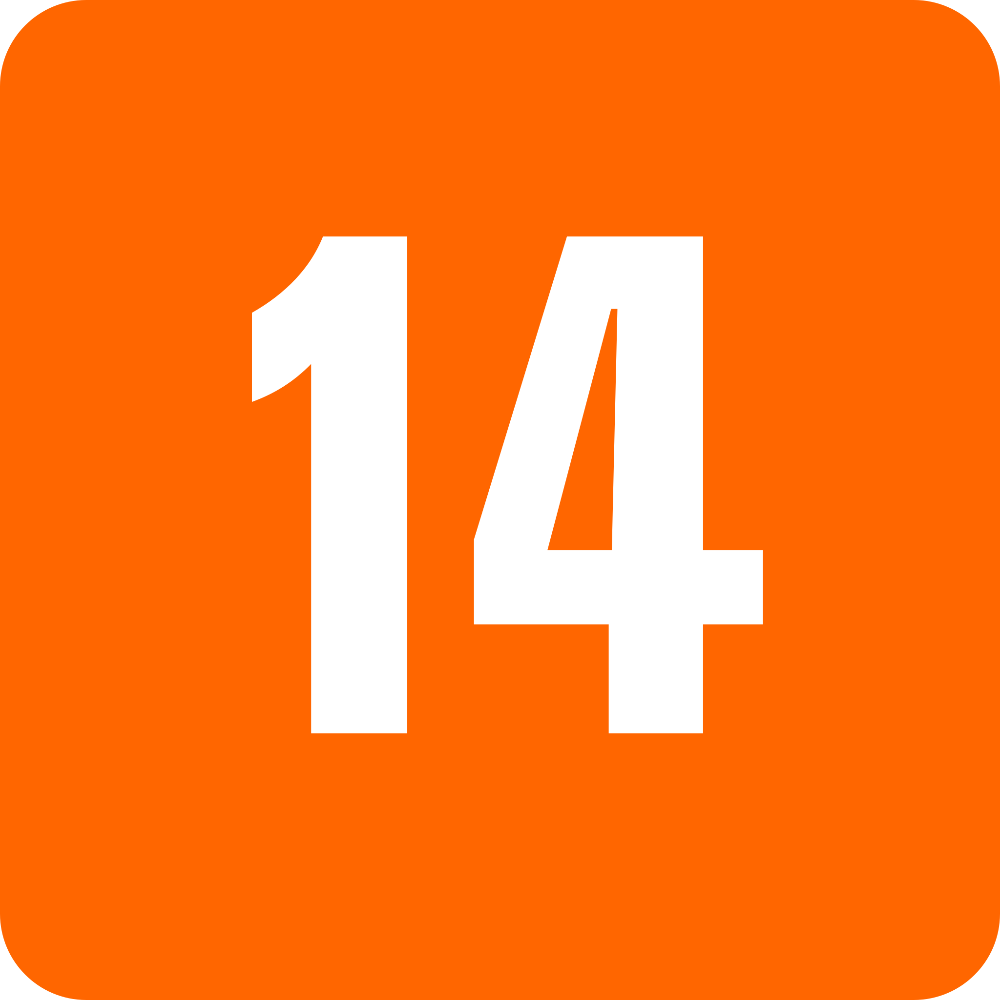
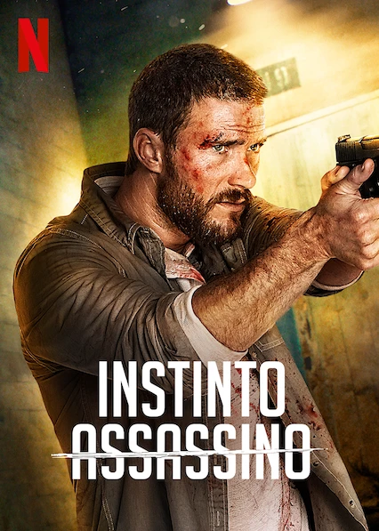

Quando descobre que sua amiga foi acusada de homicídio, Jack Reacher suspeita de uma conspiração e logo se vê fugindo com a moça.

Top 10 em filmes no Brasil hoje


Quando descobre que sua amiga foi acusada de homicídio, Jack Reacher suspeita de uma conspiração e logo se vê fugindo com a moça.